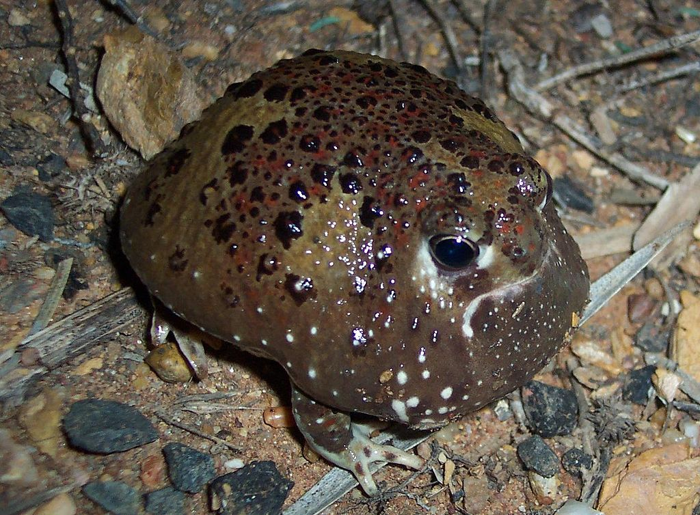

Amphibians > Crucifix Toad

The crucifix toad or holy cross frog is an Australian, fossorial frog. It is one of the few Australian frogs to display aposematism. It is native to western New South Wales, and south western Queensland.
Back to Amphibians